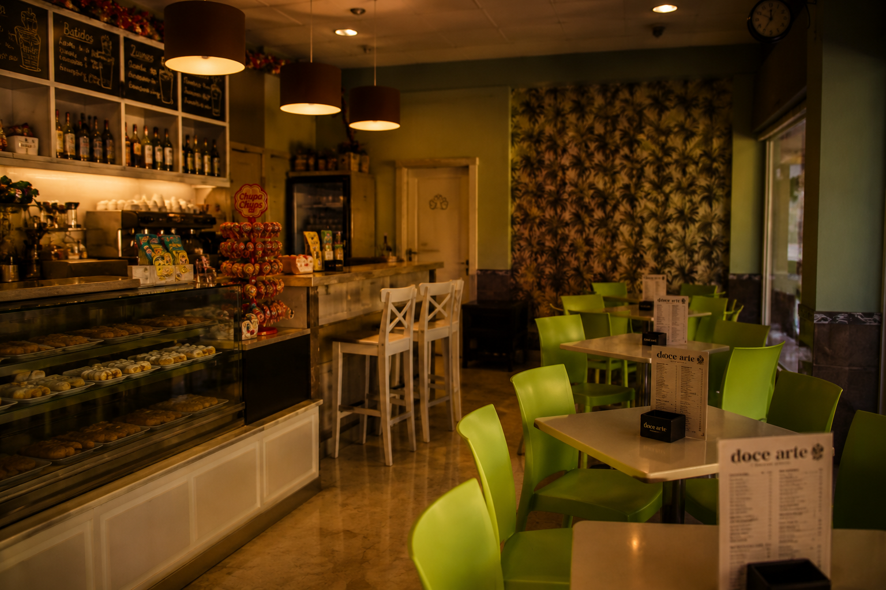
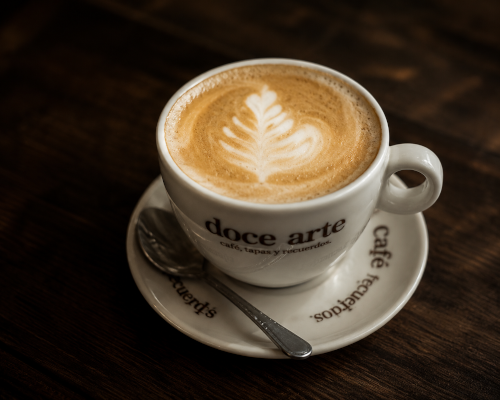
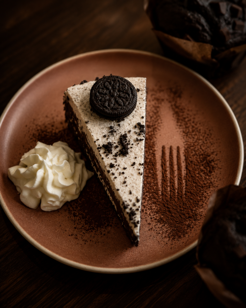
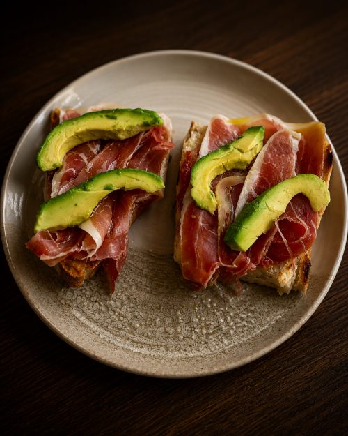
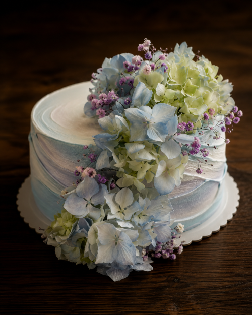
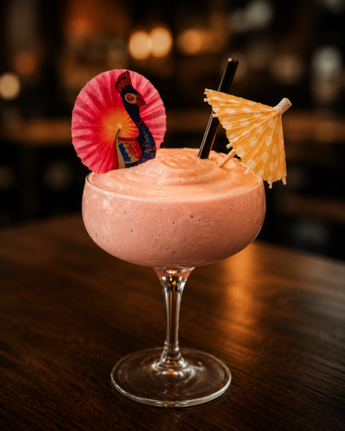

Tus recuerdos
Momentos que quedan para siempre.
Cafés de calidad, tapas artesanales y dulces hechos con amor en el corazón de Lalín.
Momentos que quedan para siempre.
Llevamos tus antojos a donde estés.
Tartas únicas para momentos especiales.
Lunes a domingo de 10:00 a 14:00 y 17:30 a 22:00, cerrado los jueves.
Rúa Joaquín Loriga, 1 Lalín - Pontevedra
Más que una cafetería, un lugar acogedor para disfrutar sin prisa, conversar, celebrar y crear recuerdos inolvidables.
Descubre nuestra historia

Aromas que te abrazan.

Tentaciones irresistibles.

Pequeños bocados, grandes momentos.

Celebraciones que merecen algo especial.

Para cada momento, la bebida perfecta.